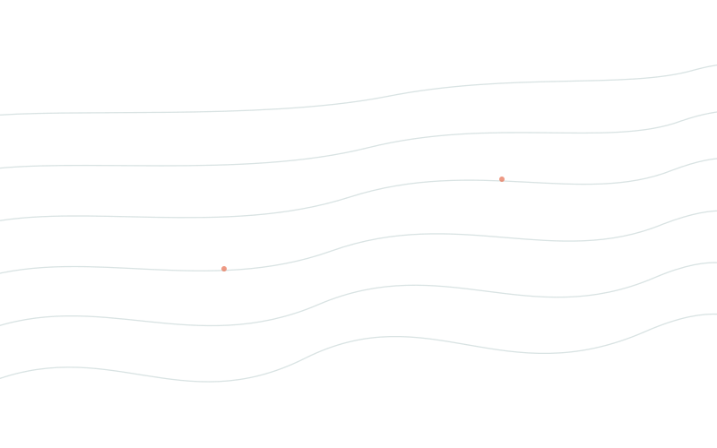

Commercial water efficiency training, Rous County Council, NSW
Council staff trained to conduct commercial water efficiency audits independently — capability that now belongs to the organisation.
The client
Rous County Council is the bulk water supplier and regional water authority for the Northern Rivers region of NSW, responsible for water supply across member councils including Lismore, Ballina, Byron and Richmond Valley. It manages both the wholesale supply network and oversight of water efficiency across a jurisdiction spanning urban centres to rural and agricultural communities. Unlike a metropolitan utility with deep internal technical benches, Rous operates as a regional authority where specialist capability must be built and maintained carefully.
Eko was engaged to develop and deliver a Commercial Water Efficiency Training program for Rous operational staff. The need was specific: Rous wanted to build genuine internal capability — staff who could identify waste, quantify it, and act on it without reaching for the phone to call an external consultant every time. The central question wasn't how to conduct a water efficiency audit. It was how to make sure that knowledge lived inside the organisation permanently.
Why it matters
Water efficiency is not a peripheral function for a regional authority — it sits at the heart of how the region manages demand against a supply system facing ongoing climate pressure. Building durable internal capability, rather than repeatedly buying it in, is what lets an authority respond early and independently.
The problem
Water efficiency programs that depend entirely on external consultants have a structural flaw that rarely gets named. The consultant walks in, conducts the audit, writes the report, and leaves. The organisation has a document — maybe even a plan. But the people responsible for the assets haven't developed the underlying skill to assess what they're looking at. When the next problem surfaces, the cycle repeats: another engagement, another report, another invoice.
Rous recognised this clearly. Their staff were capable and committed; what they lacked was a structured, field-tested methodology for conducting commercial water efficiency audits independently. Without it, the organisation remained dependent. Every new audit was a cost. Every staff turnover reset the clock.
An audit that lives in a report changes nothing. An audit that lives in your team changes everything.
The consequence of remaining in that dependency loop isn't just financial — it's strategic. An authority that can't assess efficiency independently is always reactive. That gap, between having external reports and having internal capability, is the problem Rous needed to close.
Our approach
- Developed a structured commercial water efficiency audit training program built from the ground up for Rous staff — matched to the council's asset profile, the commercial sites they'd audit, and the practical conditions their staff work in.
- Delivered the training on-ground, alongside live audits conducted by council staff — so the methodology was tested in real conditions from the start, with Eko present to support and correct in the field.
- Provided twelve months of ongoing support, including review of staff-produced audit reports and data analysis — designed to catch the errors that only surface when staff work independently for the first time, and turn them into learning rather than habit.
The result
By the end of the engagement, Rous County Council had operational staff trained and capable of conducting commercial water efficiency audits independently. Water efficiency plans were completed for several local businesses across the region — work conducted by council staff, not external consultants. The twelve months of embedded support ensured the capability didn't fade after the initial training: staff produced audit reports, received structured feedback, and refined their methodology over the engagement. What was delivered wasn't a training certificate. It was a functioning internal audit capability that now belongs to the organisation.
For a regional water authority, this outcome compounds in a way a single external audit never could. Every future audit conducted internally is a cost saving. Every piece of knowledge retained through staff experience is an asset that grows.
Web search conducted — no qualifying published outcomes found for this engagement within 2017–2026.
What it means to you
You don't have a water efficiency problem. You have a knowledge ownership problem.
You booked the consultant. You paid the invoice. The report arrived, you read it once, and then it went into a folder. And here you are, twelve months later, with the same water costs, the same gaps in your data, and a vague sense that whatever was in that report didn't actually change anything.
Here's the pattern most efficiency programs are built on, and why so many don't move the needle: the knowledge of how to find and fix water waste is treated as a product to be purchased rather than a capability to be built. So organisations buy audits. They get reports. The reports describe problems accurately. And then nothing changes — because the people responsible for the assets still don't know how to do what the report says needs doing. The consultant wasn't building your capability. They were demonstrating their own.
Until the knowledge lives inside your team, the problem doesn't go away — it just gets invoiced.
What Rous did was different. They didn't buy another audit. They built the capability to conduct audits themselves — with field mentoring, structured feedback, and twelve months of support to make sure the knowledge embedded properly. The result wasn't a report in a folder. It was a team that can now identify waste, measure it, and act on it without external help.
Our approach to capacity building is grounded in what we call field-embedded learning — structured on-ground delivery alongside live audits, with real-time mentoring, followed by a supported independent phase where staff produce their own work and receive direct feedback. It treats capability as something built in layers, not transferred in a single session. We've written this up in a free report called The Leakage Code.
Download The Leakage Code here
P.S. If you have a sustainability report, a water efficiency plan, or a board presentation coming up, download this before you start writing it. Not because it will write it for you — because it will give you a field-tested framework for explaining where the gaps actually are, and why the approach you've been taking hasn't closed them.
Sources & references
No external statistics were cited in the body of this case study. All facts are drawn directly from the raw case file provided by Eko.